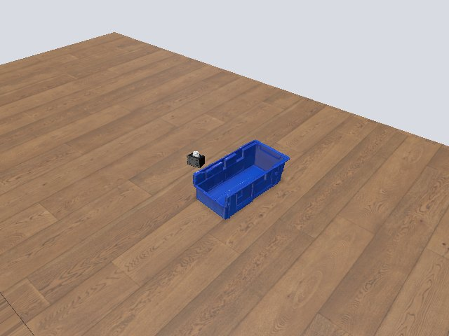
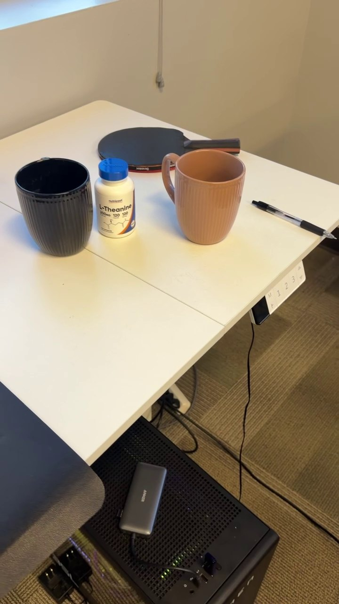
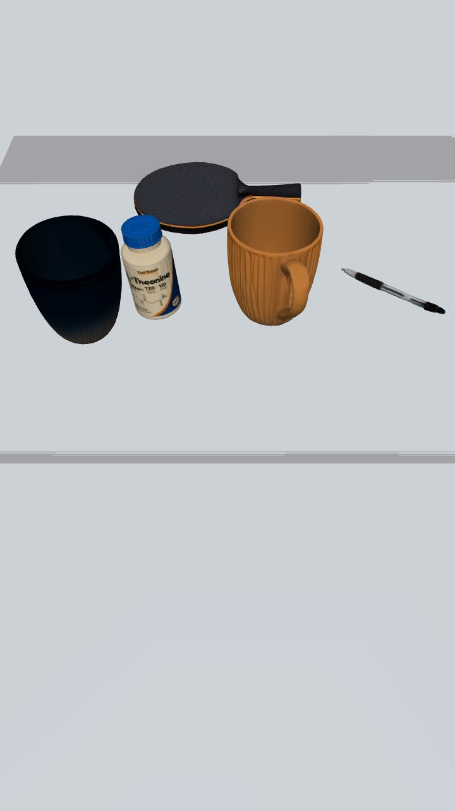
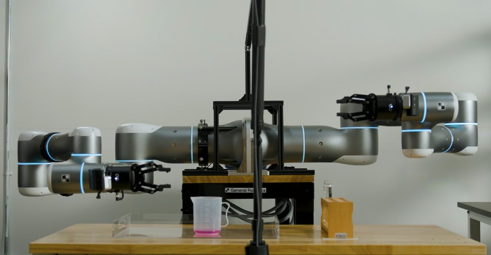
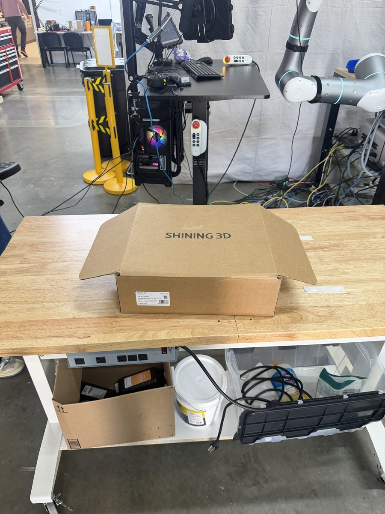
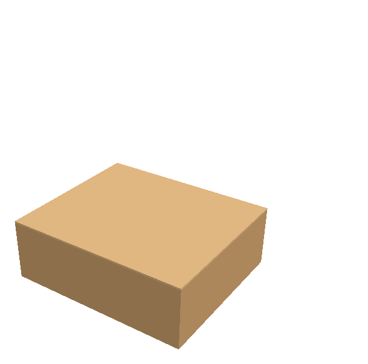
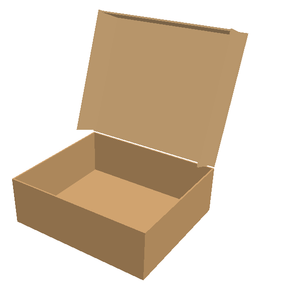
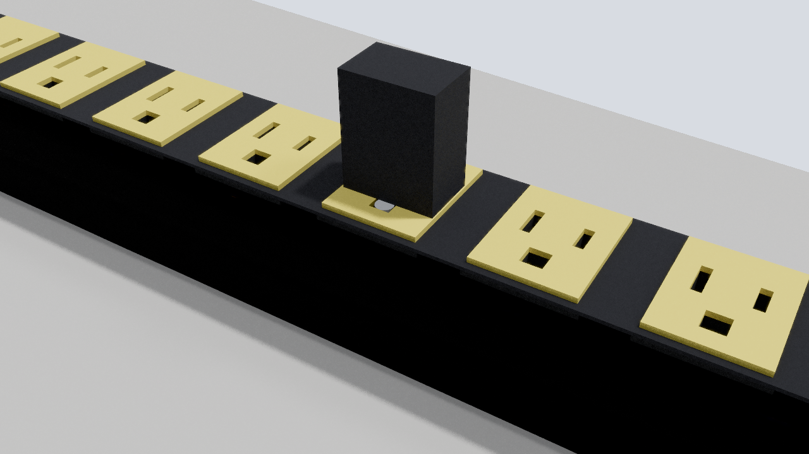
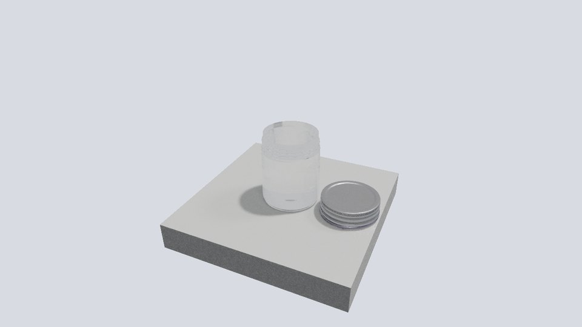

Stop early on identity
After stage 5 the expected objects must be present, the image must register to the source and each object’s pixels must agree with it. A failure stops the run before any mesh generation is paid for.
One photograph in, a settled simulation scene out, and a harness that refuses the scene when the evidence says it is wrong.
grid-real2sim ports the SimFoundry reconstruction recipe onto GRID Cortex and wraps it in an acceptance harness. Reconstruction gives appearance and layout; a separate completion step adds the hinges, sockets and threads a robot needs to interact with an object. This page describes both, with the runs that shaped them.
Real / one phone photograph

Simulation / settled scene, three.js viewer

The camera-pickup bench from one phone photograph, about 15 minutes on one workstation. On 12 October the pose stage ran on Cortex FoundationPose: both objects posed in 64 s, with fitted scale corrections of 0.975 and 0.929 against 0.968 and 0.935 from the local backend, and settling moved them 2.1 mm and 1.9 mm.
Pipeline
Every stage runs as its own subprocess against a frozen copy of the configuration and writes into its own folder. A stage earns a hashed checkpoint only when it reports success and its artifacts exist; changed inputs need a new run, so a stale artifact can never pass as a fresh one. Learned models run as Cortex calls by default.
Stages 3–4 and parts of the utilities are vendored from SimFoundry at commit b2a7c3cc; the remaining stages are rewritten or adapted, and the source records every behaviour change from upstream. The bundle exports onward to a Vivarium (MuJoCo) scene and a self-contained browser viewer.
Acceptance
A biolab photograph ran all twelve stages, exported a loadable scene, and was wrong. The harness was built from that post-mortem. A case file pins the source bytes and the expected objects; a check runs at every stage boundary; and the final audit recomputes every metric from the artifacts instead of trusting an earlier verdict.
After stage 5 the expected objects must be present, the image must register to the source and each object’s pixels must agree with it. A failure stops the run before any mesh generation is paid for.
Stages 3, 5, 6, 8 and 11 need a recorded verdict, bound to that stage’s checkpoint digest. A rerun makes the review stale, and the run will not continue past an unreviewed stage.
Stage 10 measures penetration before any stepping; stage 11 fails if settling moves an object more than 3 cm or rotates it more than 10°. Hitting the step budget is an error, not a pass.
| Check | Limit | Where |
|---|---|---|
| Image registration displacement | 3 px | Stage 5 gate |
| Per-object RGB agreement with the source | ≥ 80 % | Stage 5 gate |
| Fitted scale correction | ≤ 1.3× | Stage 8 check; beyond it the run stops for a decision |
| Settling translation / rotation | 3 cm / 10° | Stage 11 and final audit |
| Below-plane tolerance · support gap | 1 cm · 3 cm | Final audit |
Runs
| Run | Date | Verdict | What decided it |
|---|---|---|---|
| PutCupInBowl, single frame | 30 Sep | completed | Bowl, cup and pencil; settled in 246 steps; relocated reload drifted 0.025 mm. Scale uncalibrated (field-of-view fallback). |
| IMG_1392 video, five objects | 30 Sep | passed after repair | First run dropped the paddle and let settling move objects 10–38 cm. After the stage 3/5/8/11 fixes: all five objects, 100 % pixel agreement on four and 86 % on the occluded paddle, settling ≤ 3.74 mm / 8.57°. |
| Biolab screenshot | 30 Sep | rejected | Finished all twelve stages in 892 s. Holder lost below the plane, geometry shifted 31.8 px, the jug moved 4.11 m while settling, and 10–11 cm of penetration existed before any physics step. |
| Cardboard box, one phone photo | 6 Oct | review | Every automatic gate passed except the stage 10 contact check: 10.48 mm initial penetration against a 10 mm limit. Calibration estimated. |
| Hard drive, three photos | 6 Oct | negative result | Multi-view shape from handheld photos came out squarer and thicker (1 : 0.90 : 0.24) than the drive (1 : 0.70 : 0.17); the single-view mesh was closer. |
| Camera-pickup bench, Cortex pose | 12 Oct | settled | Pose stage on Cortex in 64 s, support fit applied; stages 9–12 settled both objects within 2.1 mm and 1.1°. |
Real / IMG_1392 frame

Simulation / same view

Real / biolab screenshot

Articulation and mechanisms
Image-to-3D models return one closed surface. A socket needs a cavity, a jar needs two bodies joined by a thread, and a box needs panels on hinges. We add that structure after reconstruction, keep the reconstructed appearance, and test the result with physical probes. In every case the mechanism is a supplied prior, not discovered from observed motion.
Implemented in the pipeline (articulated_box.py), stage 10.
Real / input photo

URDF / closed

URDF / lid hinge 110°

articulated.urdf beside it, both checked by the bundle validator.Measured Every audit gate passes; settling moves the box 9 mm; in PyBullet the lid opens to 110° and the box closes again with zero self-contacts, the wings and tuck folding just inside the walls.
Crease constants are literature priors, not identified on this box. Vivarium’s object schema is rigid-only, so it receives the fused box and the crease parameters; the box-folding rollouts on the project page use a separate Vivarium mechanism. Renders above are untextured PyBullet views of the exported URDF.
Edited reconstruction, delivered as a hybrid asset.
Real / source photograph

Simulation / socket geometry

Measured The aligned plug seats to 15.9 mm and holds for two seconds; 90° rotation, 180° polarity reversal and a 4 mm lateral offset are rejected; the strip moves 2.79 mm.
Sockets are authored, not recovered from pixels. The probe uses a three-prong plug; the policy task on the project page uses a two-prong charger.
Two dynamic bodies joined by helical contact geometry.
Real / source photograph

Simulation / lid unscrewed

Measured A 5 N axial pull lifts the lid only 2.02 mm; 0.03 Nm of torque unscrews it 13.1 mm and releases it; reverse rotation reseats it 8.12 mm.
Reseating succeeded on the third yaw initialization after two failures. Thread pitch and neck are supplied structure, not measured from the real jar. Fixture forces, not a robot.
Limits
GRID pipelines/grid-real2sim at branch feature/real2sim-tool (12 Oct 2026): CHANGELOG, docs/harness.md, eval/records. Mechanism measurements from the strip and jar delivery reports. Reconstruction recipe from SimFoundry. Image provenance.